Open to co-op & internship roles
Hi, I’m Shourya Vuddemarri
Robotics Engineer · ROS2 · SLAM · Computer Vision · Autonomous Navigation
I build robotics and perception systems that combine sensing, localization, control, and real-world validation — from autonomous mobile robots and visual-inertial SLAM pipelines to multi-object tracking, sign-language recognition, and field robotics.
-
3×National RoboWars podiums, including a 1st place
-
+16 MOTAover the SORT baseline on MOT17 (multi-object tracking)
-
30 Hzreal-time visual-inertial pose output (ORB-SLAM3)
-
27–30 FPSlive ASL fingerspelling recognition from webcam
01 · About
About Me
I’m a robotics engineer who enjoys taking robots and perception systems from concept to working implementation. My work focuses on ROS / ROS2, SLAM, autonomous navigation, computer vision, sensor fusion, and real-time perception pipelines.
My experience spans autonomous mobile robots, visual-inertial localization, multi-object tracking, sign-language recognition, omni-directional kinematics, agricultural robotics, combat robotics, and experimental robotics workflows involving sensing, data logging, and repeatable validation.
What I Do
Design, simulate, and deploy robotics systems end-to-end: CAD → Gazebo / RViz → ROS2 bring-up → SLAM, localization, perception, and autonomous navigation.
How I Work
Start simple, iterate fast, and validate with experiments. I like clean launch files, repeatable logs, clear plots, modular code, and results that show what actually improved.
What I’m Seeking
Co-op / internship roles where I can work on robotics, autonomy, perception, SLAM, robot learning data pipelines, or real-time sensing systems.
02 · Projects
Projects
Selected work across localization, perception, and robot hardware — each with its own write-up, results, and media.
 2 demo videos
2 demo videos
4-Wheel Robot with SLAM & Navigation
LiDAR + camera robot in Gazebo with SLAM Toolbox, AMCL, and Nav2 for multi-room autonomous navigation.
View project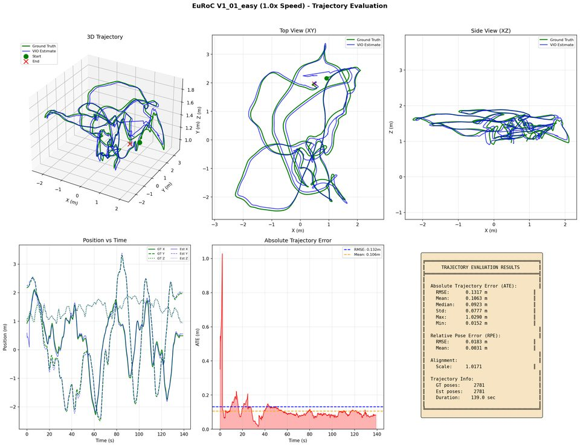
Visual-Inertial SLAM (ORB-SLAM3)
Real-time robot localization using camera + IMU fusion with ROS2 and ORB-SLAM3, evaluated on EuRoC benchmark sequences.
View project
Multi-Object Tracking with Re-ID
Pedestrian tracking pipeline using YOLOv8, Kalman filtering, Hungarian assignment, and ResNet18 appearance embeddings for re-identification.
View project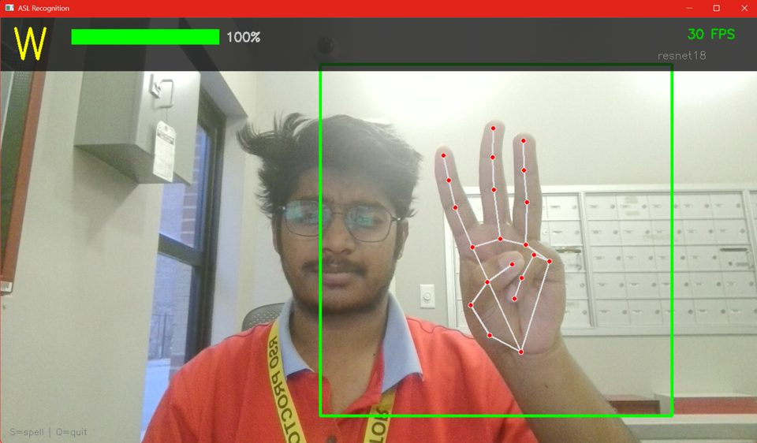
Real-Time ASL Fingerspelling Recognition
Webcam-based ASL letter recognition system using MediaPipe hand detection and CNN-based classifiers running at real-time frame rates.
View project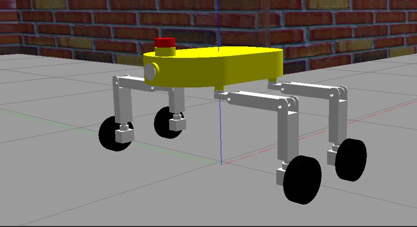
Omni-Directional Robot
Omni-drive platform with full kinematics, ROS control, obstacle avoidance, and simulation-based validation.
View project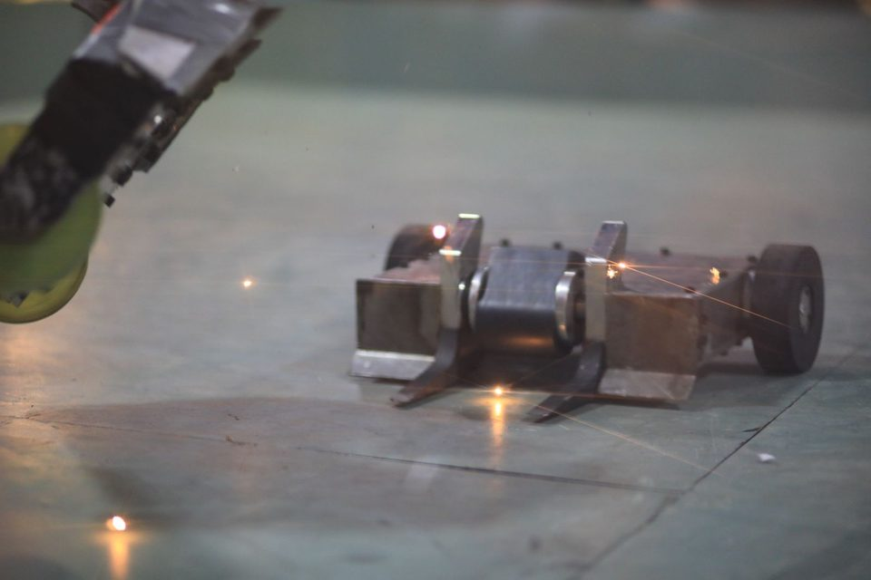
3 national podiumsCombat Robotics Series
25 / 15 / 8 kg combat robots with CNC chassis, drivetrain design, electronics integration, and national competition results.
View project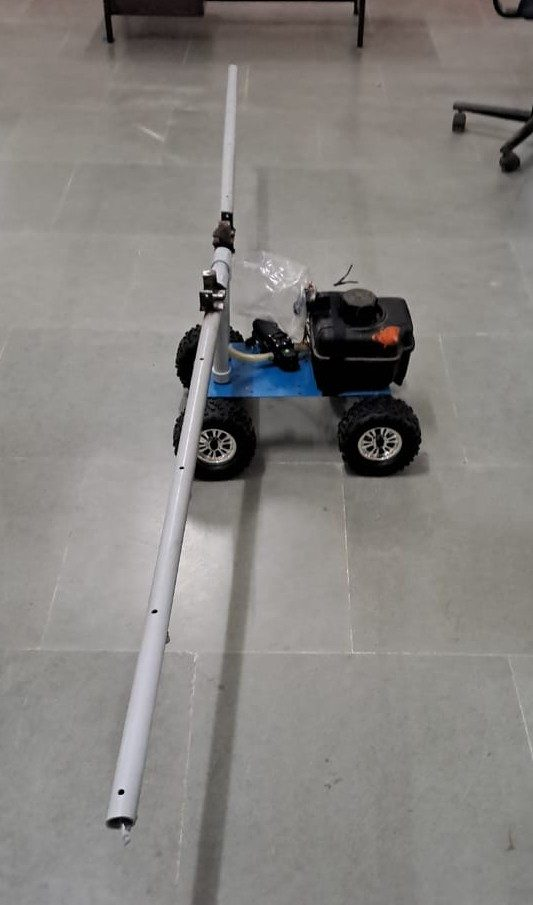
Pesticide Spraying Robot
Four-wheel manually controlled agricultural robot with pesticide pump and horizontal / vertical spraying mechanism.
View project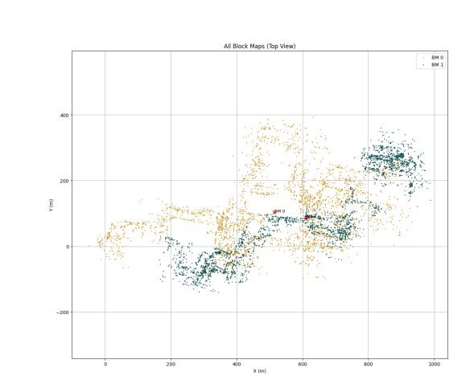
Block-Map Based Localization
Hierarchical localization using branch-and-bound search and ICP refinement for efficient scan-to-map matching.
View project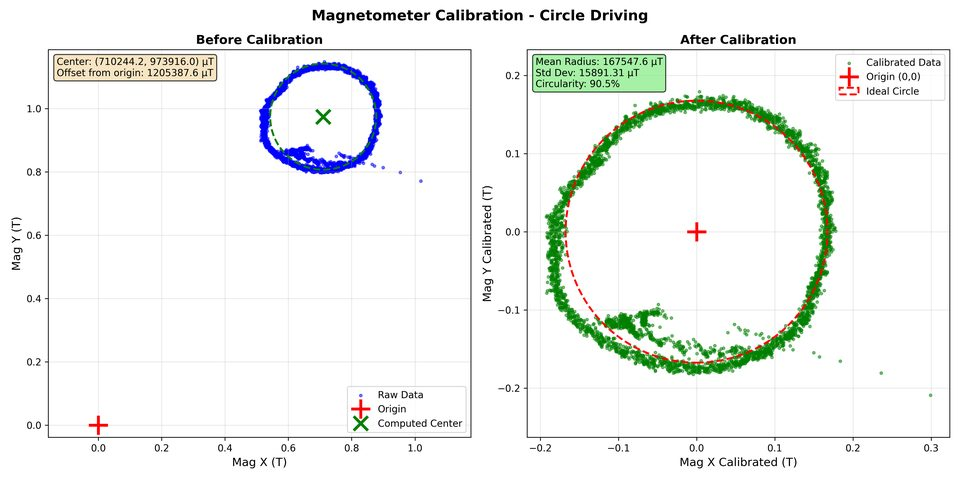
NU Nance Report
Sensor fusion, calibration, and localization analysis using ROS-based workflows and trajectory visualization.
View project03 · Skills
Skills
The frameworks, languages, and tools behind these projects.
Robotics & Autonomy
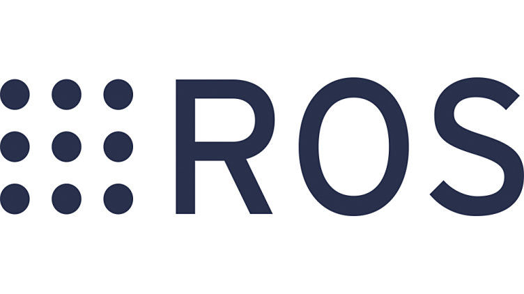
ROS / ROS2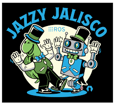
ROS 2 Jazzy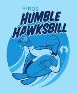
ROS 2 Humble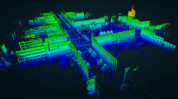
SLAM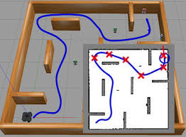
Navigation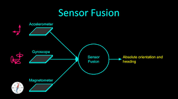
Sensor Fusion
Programming & Perception
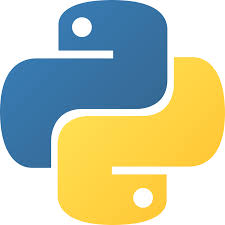
Python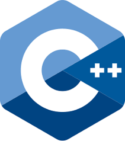
C++- OpenCV
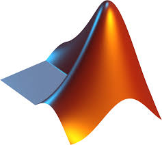
MATLAB
Simulation & CAD
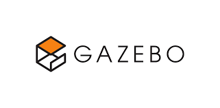
Gazebo- CoppeliaSim
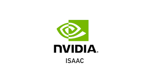
Isaac Sim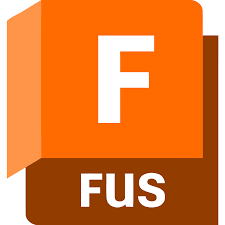
Fusion 360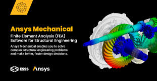
Ansys
04 · Contact
Let’s connect
I’m open to co-op, internship, and collaborative project opportunities in robotics, autonomy, perception, and intelligent systems.
vuddemarri.s@northeastern.edu